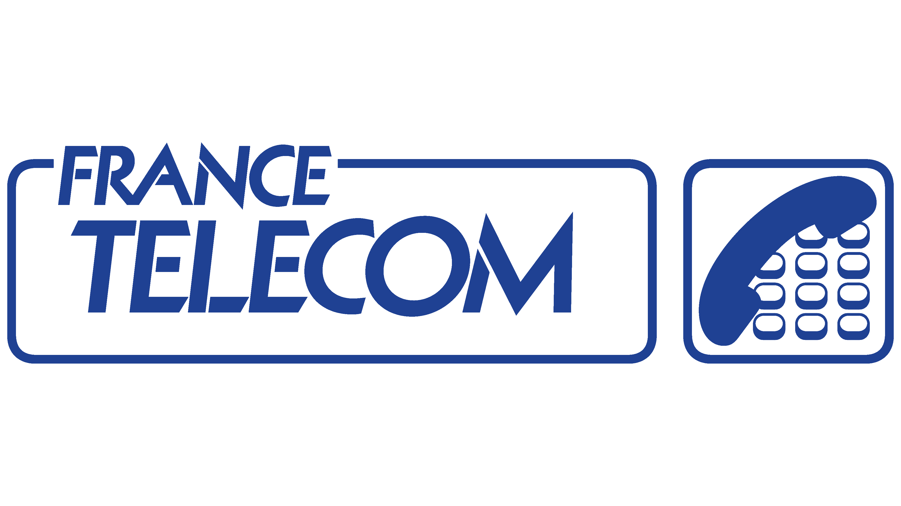
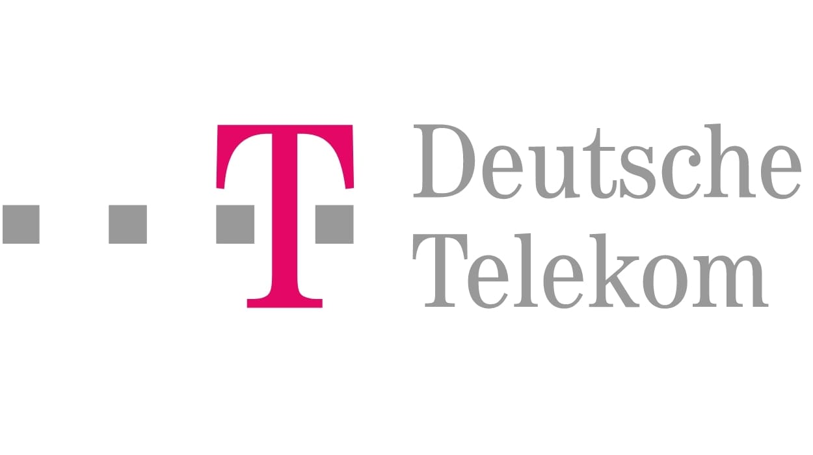

IPO — March 17, 2000
World Online
Netherlands · ISP / portal
IPO price€43 / share
Valuation€12bn
One of Europe's biggest Internet IPOs. Days before the market peak.
Quote screens. An IPO every week. Anything with .com or online in its name seems to be worth the future. Promises bought at the price of empires.
The Internet was real. The problem wasn't the technology — it was the pace. Valuations ran faster than revenue, and a single IPO was enough to turn a promise into a public price.
Lesson 1 of 1 — 6 points
A video explainer of the dot-com bubble, in English (CH 07) and French (CH 03). Turn the channel knob to switch language.
Four system windows, four symptoms. No need to scroll through a whole directory: these few cases are enough to show the euphoria was European — and so was the fall. Behind the scenes, another boom: thousands of retail investors opening online brokerage accounts to play the bubble.
One of Europe's biggest Internet IPOs. Days before the market peak.
Valued at £571M, up to £768M on day one. The appetite was total.
$135M burned in 18 months, then liquidation on May 18, 2000. The icon of too-soon, too-expensive.
Sold to Vivendi for about €150–182M, depending on the source. The typical European exit: acquisition.
While the .coms soared, Europe's carriers did worse than speculate: they overpaid. 3G licences at auction, acquisitions at the market top, all funded by debt. An industrial hangover written into the balance sheet for years — but one that, paradoxically, left a network behind.
Cumulative 3G licences across Europe: more than 100 billion euros. A promise paid in cash, before any revenue.
The brutal part isn't the licence price. It's what was left on the balance sheet years later. By the end of 2002, the continent's two telecom giants carried colossal net debt:


The point: this wasn't only a crash on screen. It was an industrial hangover — balance sheets to de-leverage before even thinking about the next move.
Acquisition amounts (Orange, VoiceStream) shown as orders of magnitude, as reported by the press at the time; they vary with scope (cash, stock, assumed debt).
Here's the curve everyone pictures: the NASDAQ, from its March 10, 2000 peak to its October 2002 trough. Below it, more quietly, Germany's NEMAX — which fell even further. Indices rebased to 100 at the peak.
Europe didn't just watch the American bubble: the NEMAX lost nearly 96%, even more than the NASDAQ (−77.9%).
Reading: indices rebased to 100 at the March 10, 2000 peak. NASDAQ Composite 5,048.62 → 1,114.11 (Oct 9, 2002, −77.9%). NEMAX All Share 8,583 → 349.02 (early Oct 2002, −95.9%). Schematic line between documented points. Hover the peak and troughs.
Journalist John Cassidy told, almost hour by hour, how the euphoria turned — and why so many investors wanted to believe, right to the end, in a story too good to be true.
Same damage on both sides of the Atlantic. The difference plays out afterwards: the United States went back to listing and scaling giants; Europe kept inventing, but funded shorter.
Note: VC amounts are orders of magnitude (sources: OECD, EVCA / NVCA; scopes and currencies not strictly comparable). Company milestones are dated; they illustrate a dynamic, not an exhaustive ranking.
Capital-risque investi, ordres de grandeur. En 2000 comme en 2010, l'ecart de financement entre les Etats-Unis et l'Europe ne se referme pas.
The crash isn't the whole story. The real difference is the ability to fund the years after.
Reading: 2000 — US ~$105bn vs Europe >€19.6bn. 2010 — US $11.8bn vs Europe ~€3.5bn. Currencies and scopes (EVCA/NVCA) not strictly comparable: read as orders of magnitude.
Sold in May 2000. Months before the crash.
Worldnet, one of France's first consumer ISPs (1994), the last independent and profitable one, was sold in May 2000 (to Kaptech, later Neuf Telecom) instead of going public. Niel exits at the top — then builds Free.
Source: Worldnet / Free ↗“The problem with people who have studied too much: they know, they look, but they see nothing.”
iFrance sold to Vivendi in 2000 (paid in stock). In 2003, Vivendi's share price collapses (~€120 → €9) and he ends up ruined and in debt — before bouncing back with Meetic.
Source: Le Monde / “Une vie choisie” ↗Evocative players (no audio recording is embedded): pressing play animates the progress bar and the equaliser. The “Source” links open the original material.
The bubble didn't kill the ideas. It wore down Europe's tolerance for the long game.
European innovation didn't vanish. Founders kept going, took the hit, started over.
The ability to fund for the long haul, to list, to absorb losses, to keep its champions.
Turning products into global platforms — that's where some of the nerve was lost.
The most uncomfortable parallel isn't the hype: it's the valuation. As in 2000, many AI-driven companies aren't profitable, and their price detaches from any economic anchor. The difference is what sits underneath: an infrastructure that is already massive, billed, solvent.
A “normal” valuation runs around 8 times EBITDA. In 2000, that anchor snapped: companies were priced with no profits, sometimes no revenue. Today the same signal is flashing — unprofitable AI companies valued at dream multiples.
Web champions listed with no profits, sometimes no revenue. The link between valuation ↔ profitability: broken.
Many AI players burn cash and post no profits, while carrying record valuations. The same signal as 2000.
Reading: ×8 EBITDA is a rough benchmark for a “reasonable” valuation, not an absolute rule. The “off the scale” needle illustrates the gap between price and profits — seen in 2000, partly replayed today.
But here's what didn't exist in 2000: underneath the hype, revenue already billed.
Out of $81.6bn in quarterly revenue. Not a promise: it's billed.
About $4.824 trillion. A scale with no equivalent in 2000.
Microsoft, Amazon, Alphabet and Meta combined. Balance sheets that can pay.
So the question isn't whether there will be an AI bubble. Bubbles are part of the cycle. The real question is elsewhere: what will be left to Europe once the wave passes — enough grip on its own tools to choose what comes next, rather than have it imposed?
In 2000 it kept its talent but lost the nerve: the ability to fund the long game, to list, to keep its champions. Twenty-six years on, the scene has changed. Facing AI, Europe is no longer starting from a blank page — it starts already dependent on infrastructures, platforms and ecosystems built elsewhere.
And dependency is usually noticed too late: one day a service shuts down — like the withdrawal of Fable and its AI features for European readers — and you discover there's no local equivalent to take over. The longer a dependency lasts, the harder it becomes to reverse.
The real question may no longer be whether Europe can still innovate. But whether it can still choose.
Save the ambition?The dossier “When Europe owned the Internet” is about to close. Do you want to save the changes made to ambition.dat?
Every figure on this page comes from the sources below. No data was invented; chart lines are schematic between documented points.